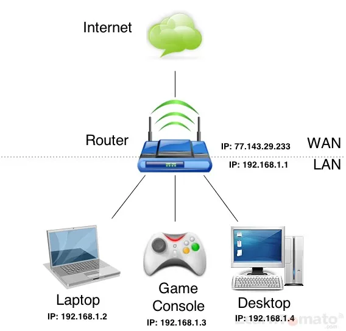
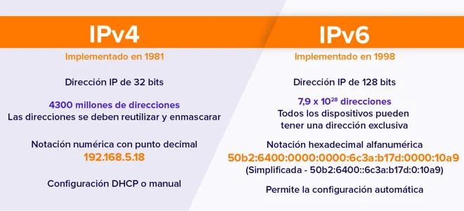
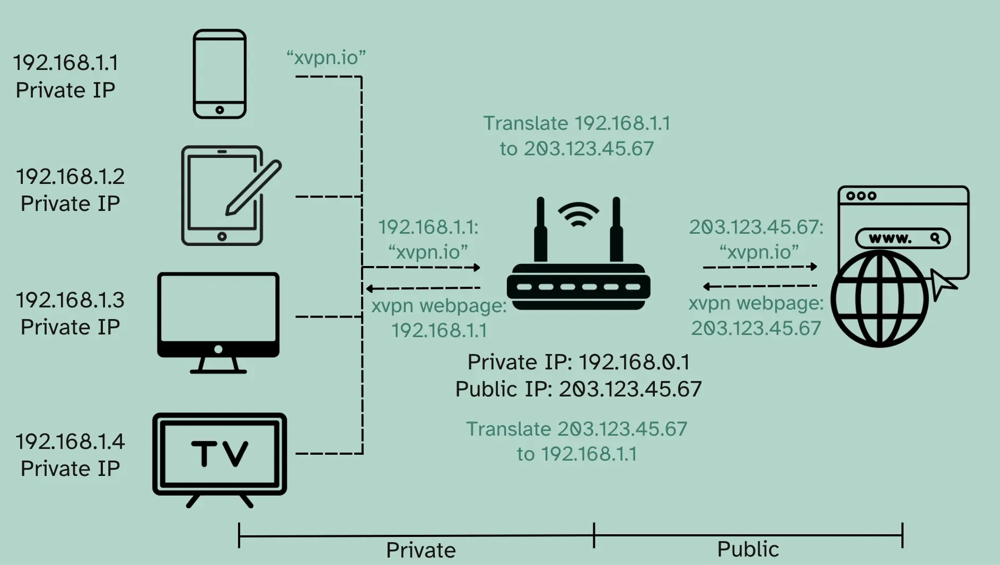
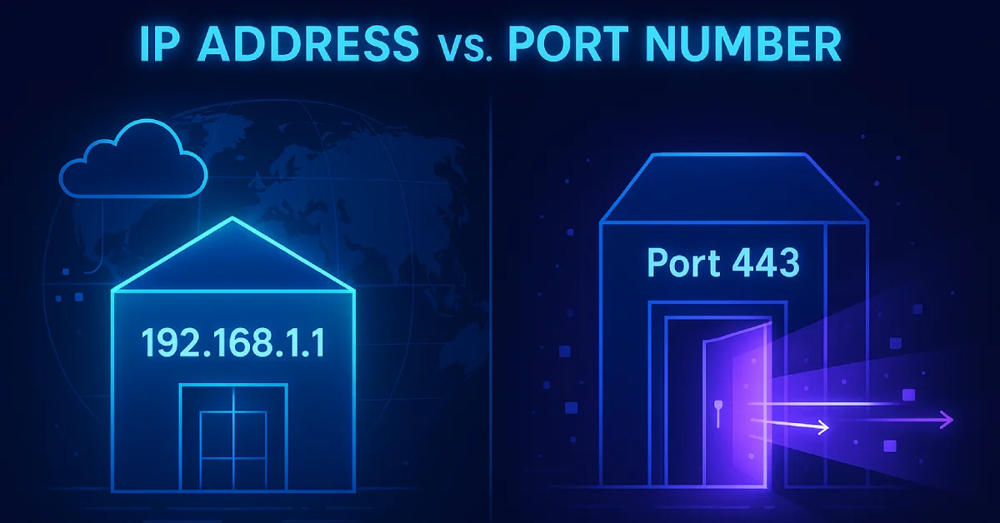

3.6 Connectant
En aquesta secció, aprendrem a connectar el nostre joc multijugador a través d'una xarxa. Però primer veurem alguns conceptes bàsics sobre xarxes i com funcionen les connexions entre clients i servidors.
Conceptes bàsics de xarxes TCP/IP
Avui en dia la majoria de les xarxes, tant local com Internet, utilitzen el protocol TCP/IP per a la comunicació. TCP (Transmission Control Protocol) és un protocol orientat a connexió que garanteix que les dades arribin correctament al seu destí, mentre que IP (Internet Protocol) s'encarrega de l'adreçament i l'encaminament de les dades a través de la xarxa.
Tipus de xarxes
- LAN (Local Area Network): Xarxa local que connecta dispositius dins d'una àrea limitada, com una casa o una oficina. Les xarxes local poden ser cablejades (Ethernet), sense fils (Wi-Fi) o mixtes (Ethernet + Wi-Fi).
- WAN (Wide Area Network): Xarxa que cobreix una àrea geogràfica més gran, com Internet.

Adreces IP
Cada dispositiu en una xarxa té una adreça IP única que l'identifica. Les adreces IP es poden classificar en:
- IPv4 (format numèric, com
192.168.1.1) - IPv6 (format hexadecimal, com
2001:0db8:85a3:0000:0000:8a2e:0370:7334).
IPv6
La versió 6 del protocol IP es va crear per solucionar el problema de l'esgotament d'adreces IPv4, ja que IPv6 ofereix un nombre molt més gran d'adreces disponibles.
Encara que IPv6 és el futur de les adreces IP, la majoria de les xarxes encara utilitzen IPv4. En aquesta unitat, ens centrarem en IPv4 per a la connexió del nostre joc.

Les IPs versió 4 espoden classificar en públiques i privades. Les adreces IP privades són utilitzades dins de xarxes locals i no són accessibles des d'Internet, mentre que les adreces IP públiques són assignades a dispositius que es connecten directament a Internet.
Per a que una IP siga privada, ha de pertànyer a un dels següents rangs:
10.0.0.0-10.255.255.255: totes les IP que comencen per10..172.16.0.0-172.31.255.255: totes les IP que comencen per172.16.fins a172.31..192.168.0.0-192.168.255.255: totes les IP que comencen per192.168..

Ports
A més de l'adreça IP, les connexions de xarxa també utilitzen ports per a identificar els serveis o aplicacions específiques que s'executen en un dispositiu. Un port és un número de 16 bits que va des del 0 fins al 65535. Els ports es classifiquen en:
- Ports coneguts (0-1023): Utilitzats per serveis i aplicacions conegudes, com el port
80per a HTTP o el port443per a HTTPS. - Ports registrats (1024-49151): Utilitzats per aplicacions i serveis que no són tan comuns.
- Ports dinàmics o privats (49152-65535): Utilitzats per aplicacions que necessiten un port temporal per a la seva comunicació.
Resum
- Adreça IP: Identifica un dispositiu en una xarxa.
- Port: Identifica un servei o aplicació específica en un dispositiu.
Un exemple de connexió seria 192.168.1.1:8080, és a dir, el dispositiu amb IP 192.168.1.1 i el servei que està corrent en el port 8080.
Aquesta combinació de IP i port també s'anomena socket.

Connectant el nostre joc
Al nostre joc multijugador, necessitem que els client es connecten a la IP del host. Per a a ixò primer hem de modificar el panell de connexió del nostre joc per a que el host mostre la seua IP i els clients puguen introduir la IP del host al que volen connectar-se.
Crea al panel de connexió un nou InputField(TexMeshPro) i un TextMeshPro anomenats IPInputField i IPText respectivament.
A dins del GameObject Managers crea un nou GameObject anomenat IPManager i afegeix-li el següent script:
1 2 3 4 5 6 7 8 9 10 11 12 13 14 15 16 17 18 19 20 21 22 23 24 25 26 27 28 29 30 31 32 33 34 35 36 37 38 | |
En primer lloc creem un singleton per a que puguem accedir a aquest objecte, usant el procediment que ja coneixem.
També creem 2 mètodes per a obtenir i establir el valor de l'InputField.
El mètode Start() crida al mètode GetLocalIPs(), que té el següent codi:
1 2 3 4 5 6 7 8 9 10 11 12 13 14 15 16 17 18 19 20 21 22 23 | |
Aquest mètode obté totes les adreces IP associades al dispositiu local i les filtra per a mostrar només les adreces IPv4. Si el dispositiu té més d'una IP, les mostrarà totes separades per comes.
Arrosseguem el InputField i el TextMeshPro al script per a que es mostren les IPs del host i els clients puguen introduir la IP del host al que volen connectar-se. Comprova que al iniciar el joc es mostren les IPs del host al panell de connexió.
També hem de modificar el UIManager per a que el botó de connectar cride al mètode GetInputIP() del IPManager i utilitze aquesta IP per a connectar-se al host:
1 2 3 4 5 6 7 8 9 10 11 12 13 14 15 16 17 18 19 20 21 22 23 24 25 26 27 28 29 30 31 32 33 34 35 36 37 | |
Ací agafem una referència al component UnityTransport del nostre NetworkManager, que és el sistema de transport que estem utilitzant per a les connexions de xarxa.
Al mètode HostButtonCallback(), obtenim la IP introduïda per l'usuari a través del mètode GetInputIP() del IPManager. Comprovem que la IP és vàlida utilitzant el mètode IsValidIP(), que utilitza la classe IPAddress per a validar el format de la IP. Si la IP no és vàlida, mostrem un missatge d'error a l'InputField. Si la IP és vàlida, utilitzem el mètode SetConnectionData() del UnityTransport per a establir la IP i el port al que el host escoltarà les connexions entrants, i després iniciem el host amb StartHost().
Info
El port 7777 és el port per defecte que utilitza Unity Transport, però pots canviar-lo a qualsevol port disponible si ho desitges. Això pots fer-ho al component UnityTransport del teu NetworkManager a l'Inspector. També pots canviar-ho des del codi.
Si ara poses en marxa el joc, veuràs que el panell de connexió mostra la IP. Si introduïxes aquesta IP en el InputField i tries l'opció de host, veurà que al NetworkManager li has establert aquesta IP com a adreça de connexió, i els clients podran connectar-se a aquesta IP per a unir-se al joc multijugador.
Per a que els client puguen connectar-se al host, hem de modificar també el mètode ClientButtonCallback() del UIManager per a que utilitze la IP introduïda per l'usuari:
1 2 3 4 5 6 7 8 9 10 11 12 | |
Com pots comprovar, el codi és molt similar al del host, però en aquest cas cridem a StartClient() en lloc de StartHost(). Això farà que el client intente connectar-se a la IP i port especificats per a unir-se al joc multijugador.
Per a fer les comprovacions finals, compila el joc copia'l a un altre dispositiu de la mateixa xarxa local.